Introduction
Google Tag Manager (GTM) has become an essential tool for digital marketers, SEO professionals, PPC specialists, and website owners who want to implement tracking without constantly editing website code. From tracking button clicks and form submissions to configuring Google Analytics 4 (GA4), Google Ads conversions, and Meta Pixel events, GTM simplifies website tracking while improving accuracy and flexibility.
As businesses rely more on data-driven decisions, mastering Google Tag Manager is no longer optional—it's a valuable skill that helps you understand user behavior, measure marketing performance, and optimize conversions.
In this guide, you'll discover 25 Google Tag Manager Tips Every Marketer Should Know in 2026. Whether you're just getting started or looking to improve your tracking setup, these practical tips will help you build a more reliable and scalable measurement strategy.
What Is Google Tag Manager?
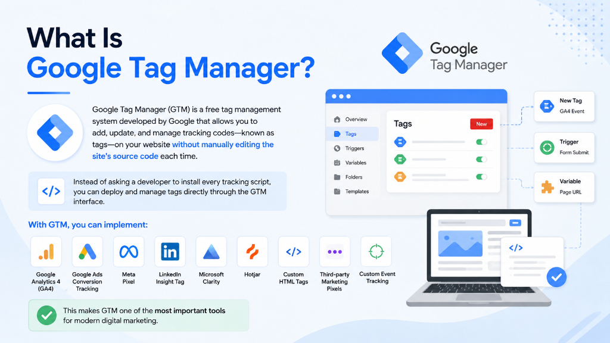
Google Tag Manager (GTM) is a free tag management system developed by Google that allows you to add, update, and manage tracking codes—known as tags—on your website without manually editing the site's source code each time.
Instead of asking a developer to install every tracking script, you can deploy and manage tags directly through the GTM interface.
With GTM, you can implement: Google Analytics 4 (GA4), Google Ads Conversion Tracking, Meta Pixel, LinkedIn Insight Tag, Microsoft Clarity, Hotjar, Custom HTML Tags, third-party marketing pixels, and custom event tracking. This makes GTM one of the most important tools for modern digital marketing.
Why Google Tag Manager Matters
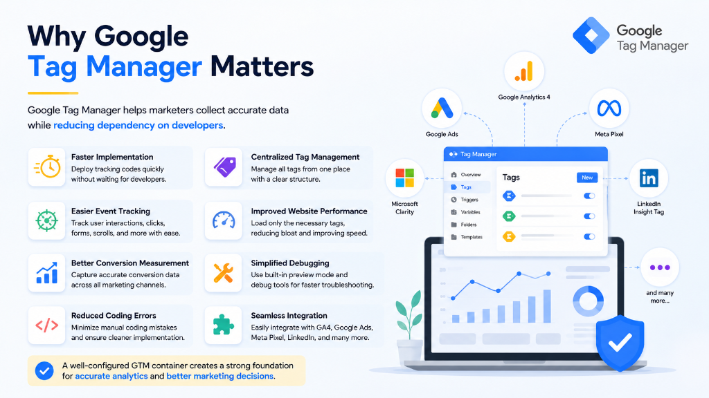
Google Tag Manager helps marketers collect accurate data while reducing dependency on developers. Key benefits include faster implementation of tracking codes, easier event tracking, better conversion measurement, reduced coding errors, centralized tag management, improved website performance, simplified debugging, and seamless integration with multiple marketing platforms.
A well-configured GTM container creates a strong foundation for accurate analytics and better marketing decisions.
1. Install Google Tag Manager Correctly
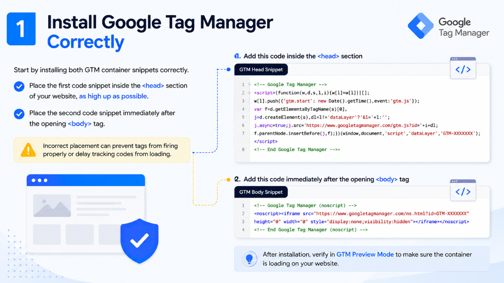
Start by installing both GTM container snippets correctly. Place the first code snippet inside the <head> section of your website, as high up as possible. Place the second code snippet immediately after the opening <body> tag. Incorrect placement can prevent tags from firing properly or delay tracking codes from loading.
2. Use One GTM Container Per Website
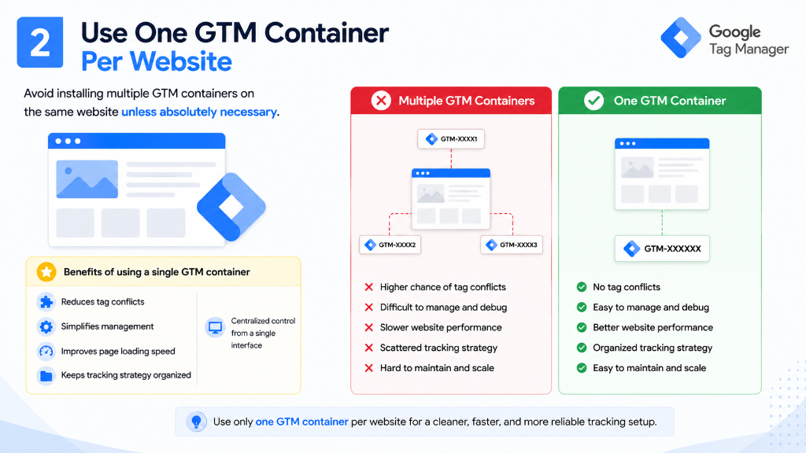
Avoid installing multiple GTM containers on the same website unless absolutely necessary. Using a single container helps reduce tag conflicts, simplifies management, improves page loading speed, and keeps your entire tracking strategy organized in a single interface.
3. Connect Google Analytics 4 Through GTM
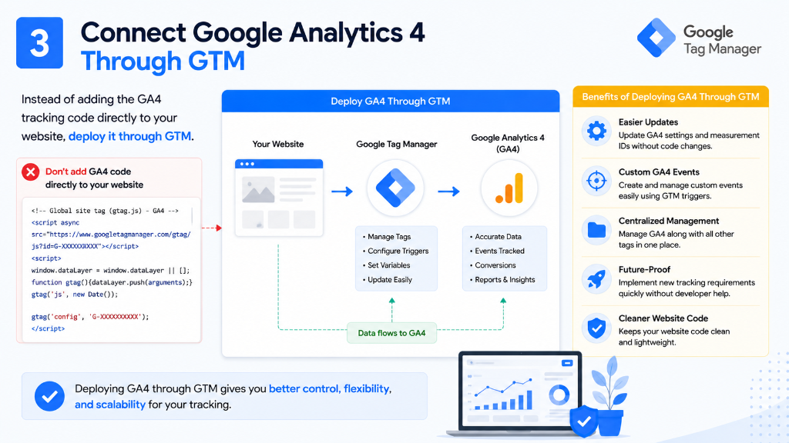
Instead of adding the GA4 tracking code directly to your website, deploy it through GTM. Deploying GA4 through Tag Manager makes it easier to update tracking settings, configure custom GA4 events, maintain centralized management, and implement future tracking modifications without code edits.
4. Organize Tags with Clear Naming Conventions
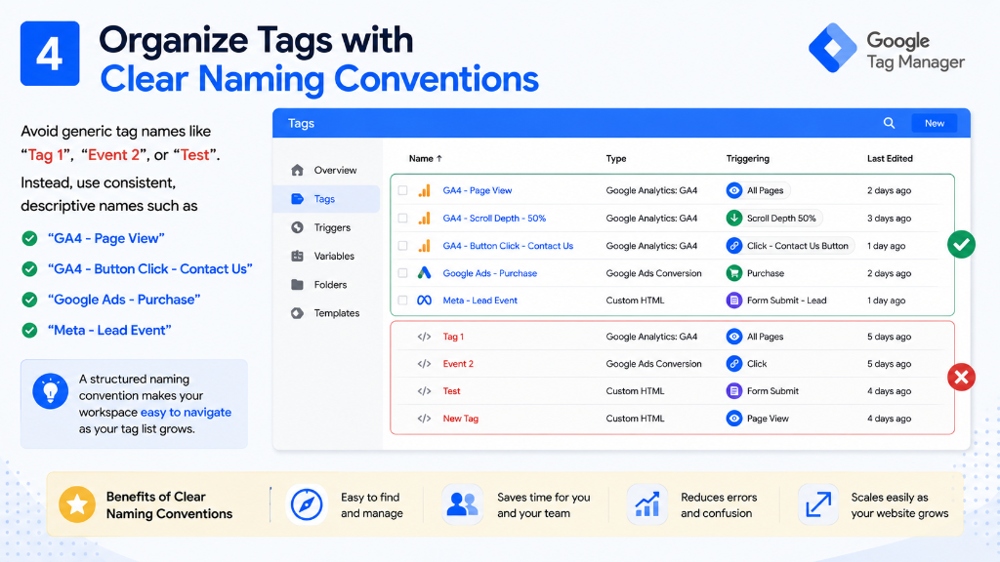
Avoid generic tag names like "Tag 1", "Event 2", or "Test". Instead, use consistent, descriptive names such as "GA4 - Page View", "GA4 - Button Click - Contact Us", "Google Ads - Purchase", or "Meta - Lead Event". A structured naming convention makes your workspace easy to navigate as your tag list grows.
5. Understand Tags, Triggers, and Variables
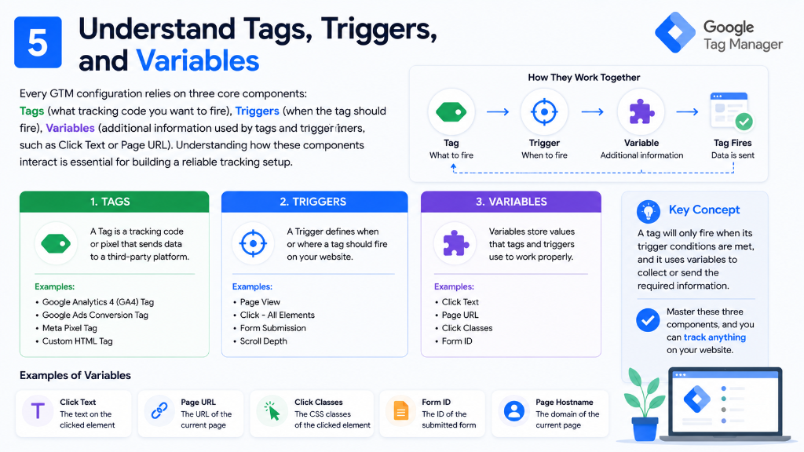
Every GTM configuration relies on three core components: Tags (what tracking code you want to fire), Triggers (when the tag should fire), and Variables (additional information used by tags and triggers, such as Click Text or Page URL). Understanding how these components interact is essential for building a reliable tracking setup.
6. Enable Built-In Variables
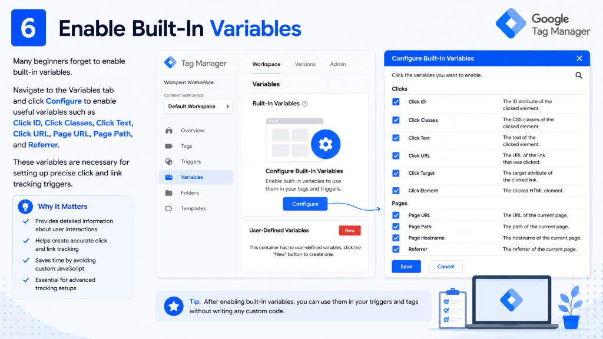
Many beginners forget to enable built-in variables. Navigate to the Variables tab and click Configure to enable useful variables such as Click ID, Click Classes, Click Text, Click URL, Page URL, Page Path, and Referrer. These variables are necessary for setting up precise click and link tracking triggers.
7. Use Preview Mode Before Publishing
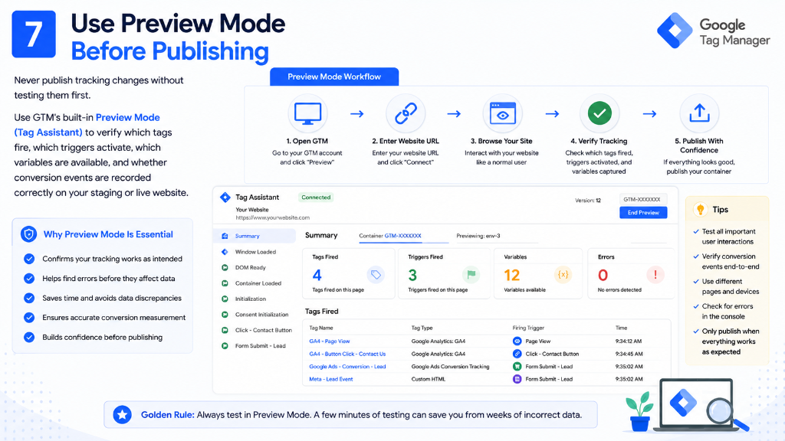
Never publish tracking changes without testing them first. Use GTM's built-in Preview Mode (Tag Assistant) to verify which tags fire, which triggers activate, which variables are available, and whether conversion events are recorded correctly on your staging or live website. Testing helps prevent tracking discrepancies.
8. Publish with Version Names
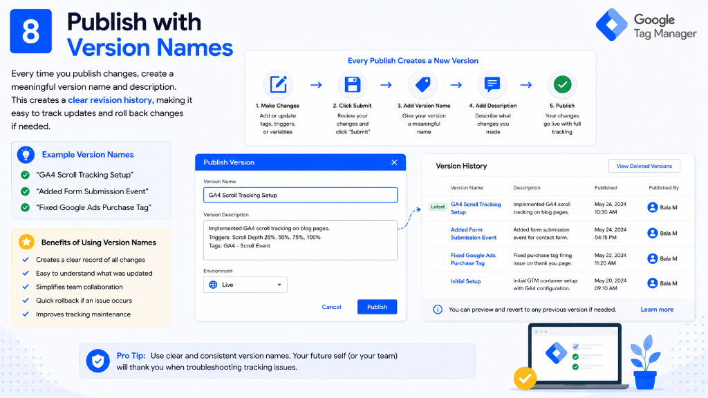
Every time you publish changes, create a meaningful version name and description. For example, use names like "GA4 Scroll Tracking Setup", "Added Form Submission Event", or "Fixed Google Ads Purchase Tag". This creates a clear revision history, making it easy to track updates and roll back changes if needed.
9. Track Important Button Clicks
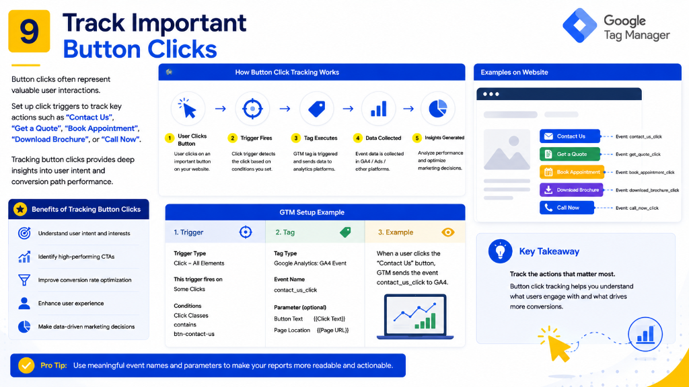
Button clicks often represent valuable user interactions. Set up click triggers to track key actions such as "Contact Us", "Get a Quote", "Book Appointment", "Download Brochure", or "Call Now". Tracking button clicks provides deep insights into user intent and conversion path performance.
10. Track Form Submissions
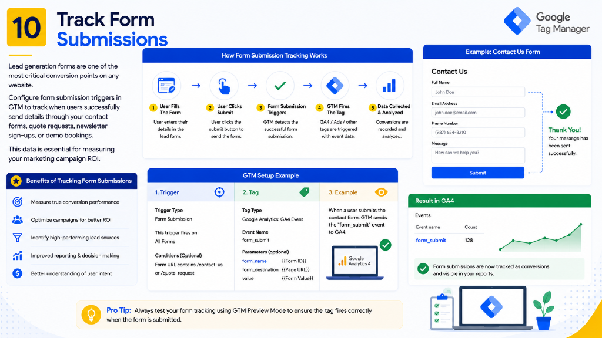
Lead generation forms are one of the most critical conversion points on any website. Configure form submission triggers in GTM to track when users successfully send details through your contact forms, quote requests, newsletter sign-ups, or demo bookings. This data is essential for measuring your marketing campaign ROI.
11. Track Scroll Depth
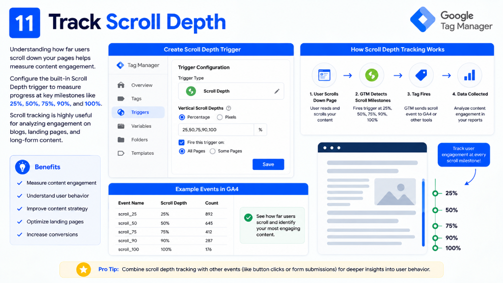
Understanding how far users scroll down your pages helps measure content engagement. Configure the built-in Scroll Depth trigger to measure progress at key milestones like 25%, 50%, 75%, 90%, and 100%. Scroll tracking is highly useful for analyzing engagement on blogs, landing pages, and long-form content.
12. Track File Downloads
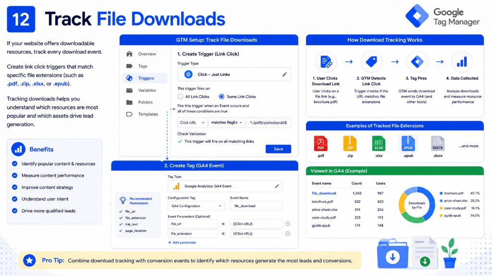
If your website offers downloadable resources, track every download event. Create link click triggers that match specific file extensions (such as .pdf, .zip, .xlsx, or .epub). Tracking downloads helps you understand which resources are most popular and which assets drive lead generation.
13. Track Outbound Link Clicks
Visitors often leave your website by clicking external links. Use GTM to monitor outbound clicks pointing to social media profiles, affiliate partners, external booking systems, or payment gateways. Tracking outbound link clicks provides valuable insights into how users navigate away from your site.
14. Set Up Conversion Tracking
Google Tag Manager makes conversion tracking much easier across multiple platforms. Deferring conversion triggers for form submissions, purchases, phone number clicks, or WhatsApp conversions through GTM ensures consistent conversion numbers between Google Ads, Meta Ads, and Google Analytics 4.
15. Use Custom Events
Custom Events allow you to track user interactions that standard triggers do not capture out of the box. Use the dataLayer to push custom events for actions like video plays, live chat interactions, calculator usage, or wishlist additions, giving you deeper behavioral insights.
16. Create Reusable Variables
Instead of manually typing configuration values multiple times, create reusable User-Defined Variables. Common examples include GA4 Measurement ID, Google Ads Conversion ID, or Meta Pixel ID. If your IDs change in the future, you only need to update the variable value once.
17. Use Trigger Exceptions
Not every tag should fire on every page. Use trigger exceptions (blocking triggers) to prevent tracking codes from firing under specific conditions. For example, block tracking on admin portals, exclude staging environments, or prevent duplicate conversion firing on thank-you page reloads.
18. Avoid Duplicate Tags
One of the most common GTM mistakes is firing the same tracking tag multiple times on a single action. Before publishing your container, verify your trigger configurations, audit existing scripts, and check GA4 DebugView to ensure events only fire once per action, keeping your data clean.
19. Organize Your Workspace with Folders
As your container grows, keeping assets organized becomes essential. Create dedicated folders for different tracking groups, such as GA4 Tracking, Google Ads, Meta Ads, Microsoft Clarity, and Custom HTML. A well-organized workspace makes collaboration and maintenance much easier.
20. Add Descriptions to Tags and Triggers
Always document the purpose of your tags and triggers in GTM's description fields. For example, add a note like: "Fires when the contact form is successfully submitted." Clear documentation saves time for other team members and helps you remember why a tag was set up when auditing later.
21. Use GA4 DebugView
After configuring GA4 events in GTM, verify that the parameters and event values are being sent correctly using the GA4 DebugView tool. DebugView provides real-time verification of incoming events, ensuring they are named correctly and comply with GA4 recommendations.
22. Remove Unused Tags
Over time, GTM containers can become cluttered. Regularly review your container and delete old marketing pixels, disabled tags, unused variables, and test triggers. Keeping your GTM container clean reduces script bloat and improves your website's loading speed.
23. Use Workspaces for Team Collaboration
If multiple people manage your GTM container, set up separate workspaces. Separate workspaces prevent team members from overwriting each other's draft modifications, allow independent testing, and simplify merge processes when publishing updates.
24. Audit Your GTM Container Regularly
Review your GTM container configuration every 3 to 6 months to ensure tracking accuracy. Verify that your triggers matches current website elements, that pixels are active, and that conversions are mapping correctly. Regular audits maintain the high quality of your marketing data.
25. Keep Learning New GTM Features
Google Tag Manager continues to evolve with new capabilities, consent settings, and privacy frameworks. Stay updated with consent mode requirements, server-side tagging developments, GA4 enhancements, and privacy-first measurement changes to keep your tracking setup future-proof.
Common Google Tag Manager Mistakes
Avoid these common GTM pitfalls to ensure your analytics reports remain accurate:
- Publishing Without Testing: Always test changes in Preview Mode to check for javascript errors or incorrect triggers.
- Poor Naming Conventions: Avoid chaotic tag names. Standardize them so everyone understands what each tag tracks.
- Duplicate Tag Implementations: Placing GTM code on a site while keeping hardcoded tracking scripts active will cause duplicate pageviews and skewed bounce rates.
- Ignoring Version History: Publishing without descriptive version details makes troubleshooting updates extremely difficult.
- Overusing Custom HTML Tags: Stick to GTM's native tag templates whenever possible to maintain site performance and security.
Google Tag Manager Best Practices Checklist
Review this checklist before publishing changes to your GTM container:
- Install container codes correctly in head and body
- Use one central container per domain
- Deploy GA4 through GTM
- Enable necessary built-in variables
- Test all tag configurations in Preview Mode
- Add clear descriptions to tags and triggers
- Organize workspace tags into folders
- Leverage trigger exceptions to block unwanted pages
- Keep GTM container light by deleting unused tags
Frequently Asked Questions (FAQs)
1. What is Google Tag Manager?
Google Tag Manager (GTM) is a free tag management system from Google that allows you to add, manage, and update tracking codes on your website without editing the website's source code every time. It supports tools like GA4, Google Ads, Meta Pixel, and Microsoft Clarity.
2. Is Google Tag Manager free?
Yes, Google Tag Manager is completely free and is suitable for websites of all sizes, from personal blogs to large enterprise e-commerce platforms.
3. What is the difference between Google Tag Manager and Google Analytics 4?
Google Tag Manager is a tag management tool that sends data from your website to other platforms, whereas Google Analytics 4 is an analytics tool that receives, processes, and displays that data in reports. GTM is the middleman, and GA4 is the destination.
4. Do I need coding knowledge to use GTM?
No, basic triggers like page views, button clicks, and form submissions do not require coding knowledge. However, understanding CSS selectors and basic JavaScript helps with advanced tracking configurations.
5. What can I track using Google Tag Manager?
You can track clicks, form submissions, video plays, scroll depth, downloads, outbound links, and any custom actions configured via the dataLayer.
6. What are Tags, Triggers, and Variables in GTM?
Tags are the tracking scripts that send data. Triggers are the rules defining when those tags should execute. Variables are placeholders for dynamic values used inside tags and triggers.
7. How often should I audit my GTM container?
It is recommended to audit your container every 3 to 6 months to clean out old tags, check for broken triggers, and ensure conversion tracking remains accurate.
Conclusion
Google Tag Manager has become an essential tool for businesses that want accurate website tracking without relying on constant code changes. It simplifies the implementation of marketing tags, improves data collection, and enables marketers to measure user interactions with confidence.
The 25 Google Tag Manager Tips covered in this guide will help you build a cleaner, more organized, and more reliable tracking setup. From understanding tags, triggers, and variables to implementing conversion tracking and using Preview Mode effectively, these best practices can significantly improve the quality of your analytics data.
As websites and privacy requirements continue to evolve, maintaining a well-structured GTM container and regularly reviewing your tracking setup will ensure your marketing decisions are based on accurate data. Whether you're an SEO professional, PPC specialist, or business owner, mastering Google Tag Manager is an investment that will continue to deliver value in 2026 and beyond.
Need Help Setting Up Google Tag Manager?
A properly configured Google Tag Manager container is the foundation of accurate analytics and successful digital marketing campaigns. Whether you're tracking leads, eCommerce sales, form submissions, or user engagement, a reliable GTM setup ensures your data is accurate and actionable.
At balamurugan.in, we help businesses implement and optimize tracking solutions that support smarter marketing decisions. Get in touch with us today for professional Tag Manager implementation, custom event tracking, and GA4 configurations.